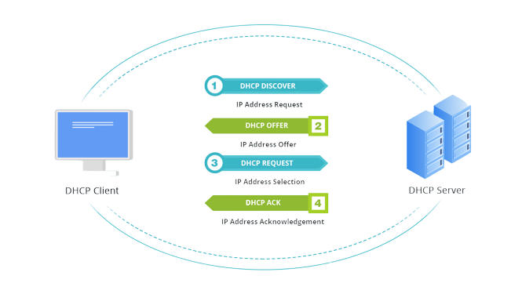

DHCP
Dynamic Host Configuration Protocol - Protocole de Configuration Dynamique d’Hôte
C’est un protocole qui attribue une adresse IP, passerelle par défaut et les informations du serveur DNS à chaque hôte effectuant une requête auprès de lui, (de manière statique ou dynamique)
Il utilise le protocole UDP et les Ports 67 pour le serveur / 68 pour le client
COMMENT
- Découverte,
- Offre,
- Requête,
- Autorisation DHCP
(Discovery, Offer, Request, Acknolegement DHCP Ack)
- Un client DHCP envoie un paquet de diffusion (Broadcast) comprenant son nom et son adresse MAC pour trouver un serveur DHCP
- Un serveur DHCP répond à la Découverte avec une Offre pour une adresse IP disponible
- Le Client répond ensuite par une Requête DHCP pour demander au serveur DHCP l’adresse proposée
- Le serveur DHCP envoie une Autorisation DHCP pour informer le client qui est autorisé à utiliser l’adresse IP demandée qui lui est attribuer.
Le DHCP attribue également la passerelle par défaut, le masque sous réseau approprié, ainsi que les informations du serveur DNS sur le périphérique
Le DHCP offre ainsi une configuration fiable et une administration réseau réduite.